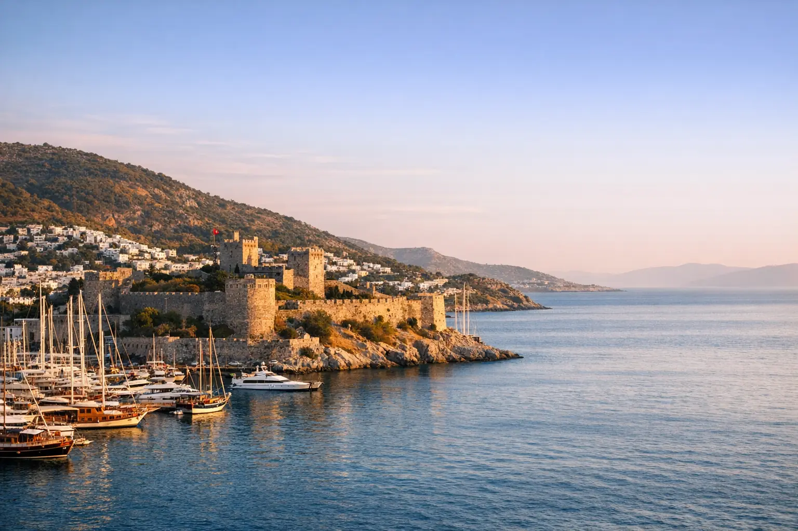

Türkiye Balayı 9 Günlük Program
Yeni evliler için dokuz gün: Boğaz'da romantik İstanbul, Kapadokya'da mağara otelde iki gece (balon seçeneğiyle) ve Sapanca'da özel bungalovda iki gece.
FiyatSezona göre değişir — teklifinizi isteyin

Destinasyon rehberi • Bodrum
Bodrum'u gezmek; yeşil tepelerde beyaz evler, yatlarla dolup taşan marinalar ve Ege Denizi'nde berrak mavi sulu sakin koylar demektir; ayrıca ailelere ve çiftlere uygun seçkin tatil köyleri de var.
Neden Bodrum?
Bodrum, Türkiye'nin güneybatısında Ege Denizi kıyısında bir yarımadadır. Eski çağlarda, Antik Dünya'nın yedi harikasından biri olan Mausoleum'un bulunduğu Halikarnas şehriydi. Bugün marinaları, koyları ve deniz ürünleri restoranlarıyla Türkiye'nin en seçkin yaz destinasyonlarından biridir. Yakındaki Yunan adalarını anımsatan beyaz küp evleri ile tepelerindeki zeytin ve narenciye ağaçlarıyla öne çıkar. Kuzeydeki antik Efes kentinden Pamukkale'nin kireç taşı teraslarına kadar Ege kıyısını keşfetmek için rahat bir çıkış noktasıdır.
Kasabanın merkezinde, Aziz Yuhanna Şövalyeleri tarafından 15. yüzyılda inşa edilen ve dünyanın bu türdeki en önemli müzelerinden biri olan sualtı arkeoloji müzesine ev sahipliği yapan Bodrum Kalesi (St. Peter Kalesi) yükselir. Çevresinde marina, çarşı ve sahil yürüyüş yolu bulunur; yarımadanın çevresinde ise her birinin kendine özgü bir havası olan sahil köyleri yer alır: lüks Yalıkavak, seçkin Göltürkbükü, sakin Bitez ve gün batımında balık restoranlarıyla Gümüşlük. Akşamları kalenin yanındaki eski çarşıda yöresel ürünler ve hediyelik eşyalar almak için dolaşmak çok keyiflidir.
Bodrum'un en güzel yanı denizin kendisi: koylar ve adalar arasında berrak suda yüzmek için geleneksel ahşap teknelerle (gulet) yapılan turlar ya da ailenize özel, tam gün bir yat. Sahil boyunca özel plajlı lüks tatil köyleri sıralanır; bunlar arasından gece hayatı bölgelerinden uzak, sakin ve ailelere uygun olanları sizin için seçeriz. Restoranları taze balığı ve deniz ürünleriyle ünlüdür, batı koylarından gün batımı manzarası sunar.
Ulaşım Milas-Bodrum Havalimanı (BJV) üzerinden kolaydır; İstanbul'dan iç hat uçuşları yaklaşık bir saat on beş dakika sürer ve yazın bölgedeki bazı şehirlerden mevsimlik direkt uçuşlar yapılır. Uçuşu, oteli, turları ve özel şoförü sizin için ayarlarız; Bodrum, tek bir programda İstanbul ile veya Antalya ile birleştirilebilir. Mayıs, haziran ve eylül, daha ılıman hava ve daha az kalabalık tercih edenlere uygundur; yüzmek özellikle haziran ve eylülde keyiflidir.

Başlıca yerler
Bodrum'da vaktinize değecek yerlerin özenle seçilmiş listesi; ziyaretler programlarımızın içinde akıllıca planlanır.
İki koy arasında bir kara burnu üzerinde, kuleleri ve bahçeleriyle marinaya bakan 15. yüzyıldan kalma taş bir kale.
Kalenin içinde, deniz dibinden çıkarılan eski gemi batıkları, küpler ve hazineler sergilenir; denize meraklı çocukların ilgisini çeker.
Şehrin kalbindeki yat limanı; çevresi restoranlar, kafeler ve dükkânlarla çevrili, en güzel hâlini akşamları alır.
Bodrum'un en seçkin marinası; lüks yatları, dünya markalı mağazaları ve zarif restoranlarıyla çiftlerin ve lüks atmosfer sevenlerin gözdesi.
Bodrum ile Gümbet arasındaki tepede eski taş değirmenler ve gün batımında iki koyun panoramik fotoğrafını çekmek için en güzel yer.
Antik Dünya'nın yedi harikasından birinin bulunduğu yer. Bugün yalnızca temeller ve birkaç taş kalmıştır; tarihini anlatan küçük bir sergi de vardır.
Şehrin üzerindeki tepenin yamacında antik bir tiyatro; kaleye ve marinaya harika bir manzara sunar.
Antik Myndos şehrinin kalıntıları üzerinde sakin bir balıkçı köyü; suyun kenarındaki balık restoranları ve gün batımıyla tanınır.
Plaj kulüplerinin ve suyun üzerinde ahşap platformların bulunduğu seçkin bir koy; lüks atmosfer ve mahremiyet sevenlerin tercihi.
Sığ sulu ve mandalina bahçeli sakin bir koy; ailelere ve rüzgâr sörfüne uygun.
Geleneksel ahşap bir tekneyle günübirlik gezi; yüzmek için Orak Adası gibi yakındaki koylarda ve adalarda durulur, öğle yemeği teknede verilir.
Hazır programlar
Gün sayınıza ve bütçenize göre tamamen değiştirilebilen gün gün programlar.
Yeni evliler için dokuz gün: Boğaz'da romantik İstanbul, Kapadokya'da mağara otelde iki gece (balon seçeneğiyle) ve Sapanca'da özel bungalovda iki gece.

Türkiye'nin tamamını görmek için iki hafta: İstanbul, Kapadokya'nın mağara otelleri, tarihî Konya yolu, Antalya plajları, ardından Trabzon ve Uzungöl.

Türk Rivierası'nda bir hafta: deniz kıyısında bir tatil köyü, Kaleiçi ve Düden Şelaleleri, Olympos teleferiği, Side ve Manavgat ile Alanya Kalesi.
Günübirlik Turlar
Nerede kalmalı?
Ayrıca sizin için havalimanı karşılama ve özel şoför hizmetini de ayarlıyoruz.
OYA önerileri
Seyahatinizi tasarlayın
Formu doldurun; otel ve ulaşım seçenekleriyle birlikte önerilen bir program WhatsApp'tan size ulaşsın.
Sorular ve cevaplar
Evet, doğru bölgeyi seçerseniz: Bitez, Torba ve Yalıkavak sakindir ve özel plajlı aile tesisleri vardır; Gümbet ve şehir merkezi ise akşamları gece hayatına yönelir. Ailenizin tarzına uygun otelleri öneririz.
Yüzme ve tekne turları için haziran–eylül arası; mayıs ve ekimde sıcaklık daha ılımandır ve daha az kalabalık olur. Kışın kasaba çok sakinleşir ve bazı sezonluk tesisler kapanır.
Yazın bazı Körfez şehirlerinden mevsimlik direkt uçuşlar yapılır ve tarifeleri sezondan sezona değişir. Her durumda İstanbul üzerinden yaklaşık bir saat on beş dakikalık iç hat uçuşuyla ulaşmak kolaydır. Uçak bileti hizmetimiz aracılığıyla sizin için en uygun seçeneği araştırırız.
Antalya; büyük her şey dahil tatil köyleri, helal tesisler ve çeşitli turlar arayan ailelere daha uygundur; Bodrum ise marinaları, yatları, sakin koyları ve seçkin atmosferi sevenlere. Ayrıca Antalya rehberimizi okuyun.
Yatın veya teknenin boyutuna, saat sayısına, sezona ve yemek ile yakıt gibi dahil olanlara bağlıdır; ortak tekne ile büyük bir özel yat arasındaki fark çok büyüktür. Bize kişi sayısını ve tarihi gönderin, size güncel teklifler gönderelim.
Bodrum Kalesi ve Sualtı Arkeoloji Müzesi, Bodrum Marina ve Yalıkavak, yel değirmenleri, antik tiyatro, Mausoleum alanı, Gümüşlük, Bitez ve Göltürkbükü koyları ve adalar arasında tekne turları.
Evet, ikisi de arabayla uzun birer günübirlik gezidir: Efes yaklaşık iki buçuk ila üç saat, Pamukkale ise yaklaşık 3,5–4 saat uzaklıktadır. Erkenden yola çıkmanızı, aileler için de özel şoförle gitmenizi öneririz.
OYA rehberinden

Türkiye'de sezona ve zevke göre balayı rotası seçen çiftler için rehber; karşılaştırma tablosu, 9 günlük önerilen program ve fark yaratan romantik dokunuşlar içeriyor.

Türkiye'nin iklimi çeşitlidir; İstanbul'a uygun olan, aynı ayda Antalya veya Uzungöl'e uygun olmayabilir. Ay ay hazırlanmış rehber, zamanlamayı ve destinasyonu birlikte seçmenize yardımcı olur.

Yolculuğunuza uymayan genel rakamlar yerine, Türkiye seyahat maliyetinin bileşenlerini ve maliyeti neyin artırıp neyin düşürdüğünü anlatıyoruz; bir haftalık bütçeyi hesaplamanın basit bir yolu ve pratik tasarruf ipuçları da var.
Daha fazlasını keşfedin

İki kıtanın şehri, Boğaz'ın büyüsü

Yeşil Karadeniz'in kapısı

Bulutlar ve ormanlar arasında bir göl

İlk Osmanlı başkenti ve karlı dağ

İki saat uzaklıkta göl ve ormanlar

Akdeniz'de güneş, deniz ve dağlar

Peri bacalarının üzerinde gün doğumu balonları
Baştan sona kişisel hizmet
Bize gideceğiniz yeri, tarihleri ve yolcu sayısını söyleyin; kısa süre içinde ayrıntılı bir teklif alın — hiçbir bağlayıcılık olmadan.